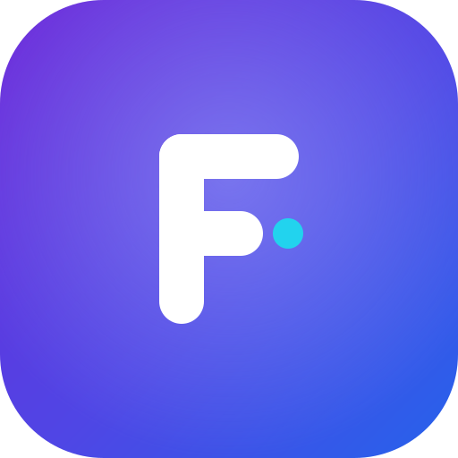

Vector (SVG) marks for a real-time, sees-and-hears AI assistant. Shown large + at app-icon size, on light & dark.
A listening ring (it hears + “sees”) wrapped around a voice waveform. Premium, modern, unmistakably an assistant.
A bold “F” monogram with a voice-pulse dot. Crisp and recognisable even at tiny sizes — great as a pure app icon.

A speech bubble (conversation) holding an eye (vision) — friendly and distinctive; leans into the camera/multimodal angle.
Mark + “FarryOn” for headers, splash screen, and the website.